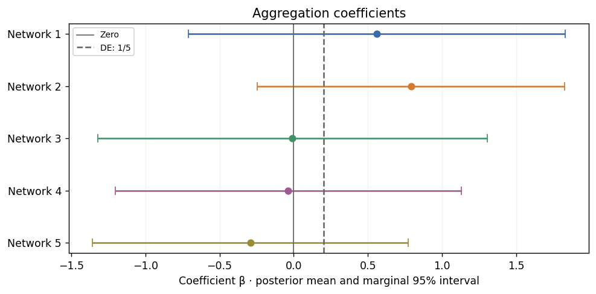
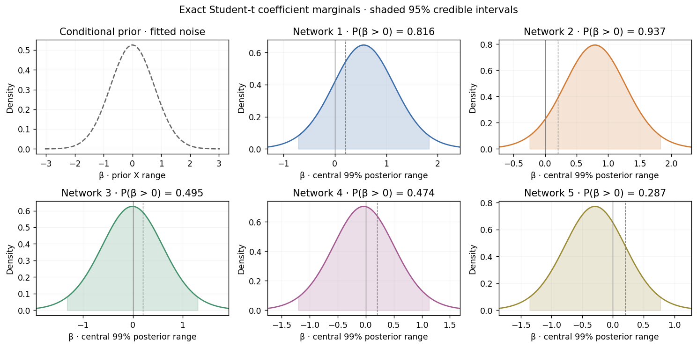
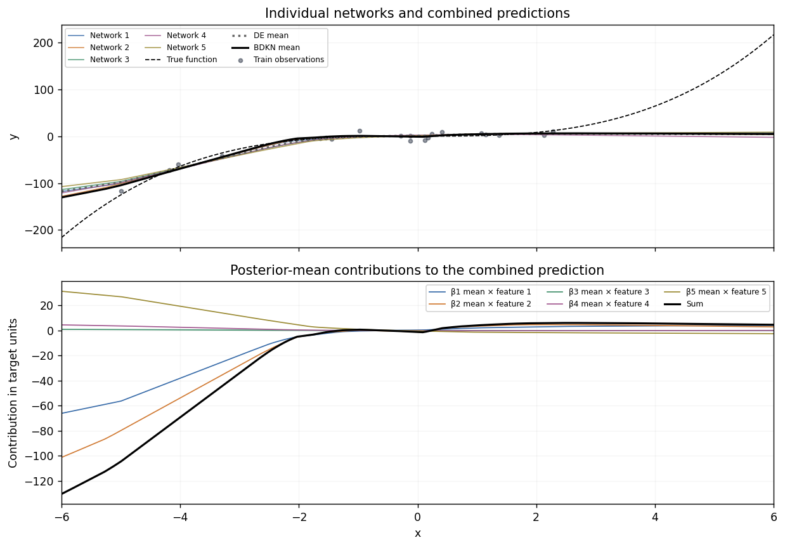
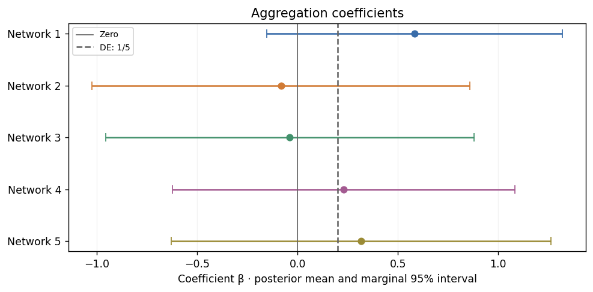
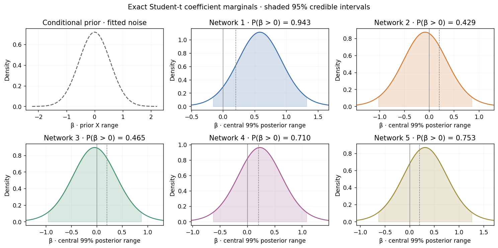
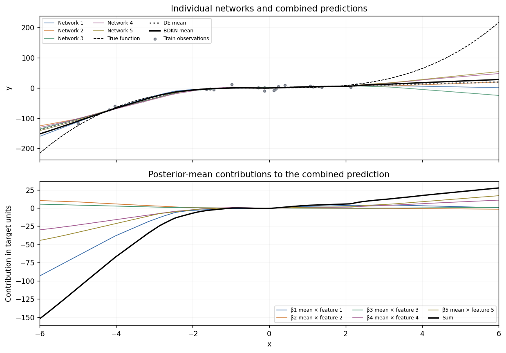
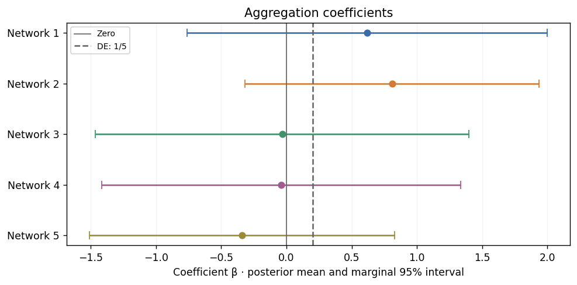
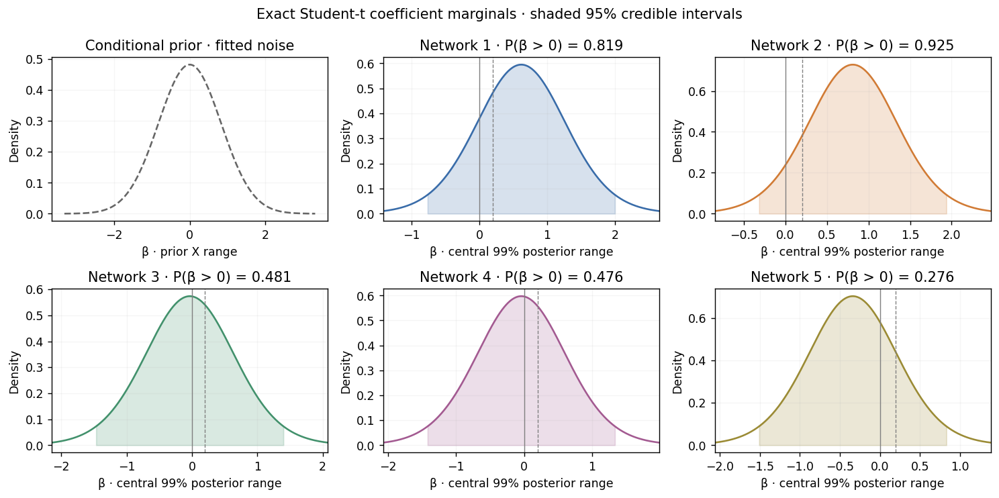
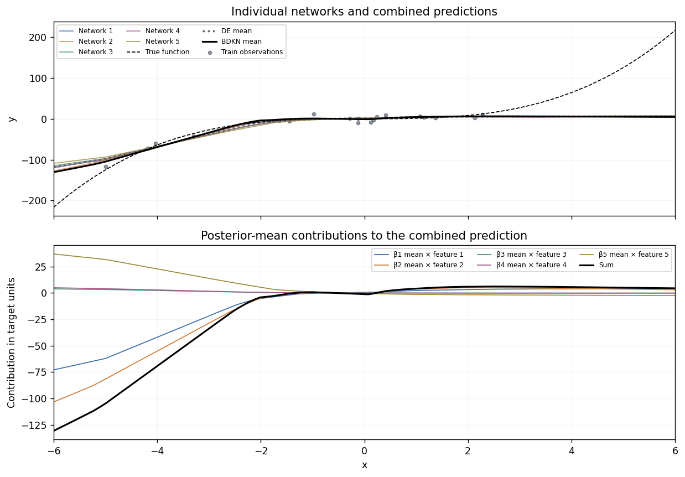

Regression comparison
Download resultsAggregation weights
Coefficients can be negative and need not sum to one. Intervals describe coefficient uncertainty; the dashed reference is DE’s fixed 1/H weight.
BDKN


Each density panel uses its own X range for readability; coefficient intervals above share a common axis. Prior reference conditions on fitted noise. Contribution shares use held-out inputs; test targets are used only for scoring.
| Network | β mean | 95% low | 95% high | P(β > 0) | Contribution share | Test RMSE | Test NLL |
|---|---|---|---|---|---|---|---|
| 1 | 0.57940 | -0.75116 | 1.90995 | 0.81274 | 0.32283 | 58.66186 | 34.93753 |
| 2 | 0.81495 | -0.27511 | 1.90500 | 0.93272 | 0.45401 | 59.02336 | 73.59532 |
| 3 | 0.00756 | -1.36568 | 1.38079 | 0.50452 | 0.00423 | 59.41621 | 34.48789 |
| 4 | -0.05790 | -1.30481 | 1.18901 | 0.46190 | 0.03097 | 61.53888 | 39.27997 |
| 5 | -0.32976 | -1.44246 | 0.78294 | 0.27171 | 0.18796 | 59.14333 | 38.97010 |
Functional repulsion · BDKN



Each density panel uses its own X range for readability; coefficient intervals above share a common axis. Prior reference conditions on fitted noise. Contribution shares use held-out inputs; test targets are used only for scoring.
| Network | β mean | 95% low | 95% high | P(β > 0) | Contribution share | Test RMSE | Test NLL |
|---|---|---|---|---|---|---|---|
| 1 | 0.56072 | -0.70928 | 1.83072 | 0.81598 | 0.33210 | 58.38219 | 34.80723 |
| 2 | 0.79086 | -0.24470 | 1.82642 | 0.93659 | 0.46585 | 58.94687 | 74.29632 |
| 3 | -0.00846 | -1.32121 | 1.30430 | 0.49471 | 0.00496 | 59.59758 | 34.40335 |
| 4 | -0.03753 | -1.20324 | 1.12818 | 0.47356 | 0.02136 | 61.85646 | 38.11420 |
| 5 | -0.29184 | -1.35536 | 0.77167 | 0.28671 | 0.17572 | 59.03291 | 39.42576 |
Weight repulsion · BDKN



Each density panel uses its own X range for readability; coefficient intervals above share a common axis. Prior reference conditions on fitted noise. Contribution shares use held-out inputs; test targets are used only for scoring.
| Network | β mean | 95% low | 95% high | P(β > 0) | Contribution share | Test RMSE | Test NLL |
|---|---|---|---|---|---|---|---|
| 1 | 0.58286 | -0.15467 | 1.32038 | 0.94257 | 0.41012 | 58.05915 | 47.33733 |
| 2 | -0.08229 | -1.02371 | 0.85913 | 0.42858 | 0.06052 | 54.74769 | 28.25751 |
| 3 | -0.03915 | -0.95729 | 0.87898 | 0.46500 | 0.02862 | 66.87419 | 41.15175 |
| 4 | 0.22987 | -0.62274 | 1.08249 | 0.70995 | 0.20906 | 45.34283 | 189.80034 |
| 5 | 0.31548 | -0.63033 | 1.26128 | 0.75271 | 0.29168 | 42.93776 | 385273710.19711 |
First-order repulsion · BDKN



Each density panel uses its own X range for readability; coefficient intervals above share a common axis. Prior reference conditions on fitted noise. Contribution shares use held-out inputs; test targets are used only for scoring.
| Network | β mean | 95% low | 95% high | P(β > 0) | Contribution share | Test RMSE | Test NLL |
|---|---|---|---|---|---|---|---|
| 1 | 0.61807 | -0.76334 | 1.99949 | 0.81910 | 0.33501 | 58.53901 | 34.86254 |
| 2 | 0.80964 | -0.31769 | 1.93696 | 0.92514 | 0.43813 | 58.99213 | 70.09419 |
| 3 | -0.03317 | -1.46560 | 1.39926 | 0.48098 | 0.01800 | 59.51035 | 34.31582 |
| 4 | -0.04074 | -1.41646 | 1.33499 | 0.47568 | 0.02206 | 59.35333 | 61.37237 |
| 5 | -0.33833 | -1.50784 | 0.83118 | 0.27650 | 0.18680 | 59.28906 | 42.67459 |